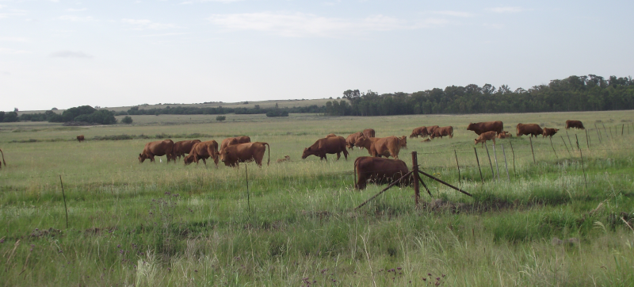

South Africa is one of 17 megadiverse countries in the world, with extraordinary biodiversity defined by species richness, high levels of endemism and diverse ecosystems across the terrestrial, freshwater, estuarine and marine realms and extending into our subantarctic territory.
This natural wealth is foundational to the wellbeing of South Africa’s people and underpins livelihoods and economic growth. These benefits rely on intact ecosystems, healthy species populations and genetic diversity.
South Africa’s exceptional biodiversity sustains livelihoods; supports water and food security; provides medicines; protects communities from natural disasters; enriches cultural, spiritual and recreational practices; enables adaptation to climate change; and drives innovation through bioprospecting and biomimicry.
Biodiversity is woven into our languages, place names, art, religions and folklore; and is showcased across the world through tourism, storytelling and horticulture.Biodiversity is both a national priority and a treasured legacy for future generations.
Benefits of biodiversity
The 2018 Compendium of Benefits of Biodiversity describes the how biodiversity provides multiple benefits to the economy, society and human well-being. The sections below contain a summary of key elements of the Compendium, with edits and some recent additional information. SANBI has prepared a series of factsheets on the benefits of biodiversity and links to these are provided within the relevant section:
1. Biodiversity and jobs
South Africa’s biodiversity provides substantial employment in a range of sectors. For every one job involved in managing and conserving biodiversity, there are five jobs in economic sectors that depend on biodiversity. This means that continued investment in biodiversity conservation helps to provide sustainable employment, contributing to one of South Africa’s primary national development goals.
In a study completed in 2019, it was estimated that jobs directly related to biodiversity totaled approximately 418 000. This was comparable to the number of jobs in the mining sector at the time and represented 2.6% of national employment. There was agreement that this was likely an underestimate, and that further work was needed to fully and correctly estimate biodiversity-related employment. Work is underway with Statistics South Africa on a Biodiversity Economy Satellite Account.
Importantly, there are jobs dedicated to managing biodiversity and/or maintaining and restoring ecological infrastructure (e.g. in protected areas or conservation authorities) and/or research, and for every one of these jobs there are approximately five other jobs that depend on utilising biodiversity – either consumptive or non-consumptive use. These utilisation jobs are in sectors such as fisheries, wildlife ranching, biodiversity tourism, traditional medicine, crop agriculture, biotrade and more.

Many biodiversity-related jobs are outside major urban centres and are labour intensive, contributing to rural development, poverty alleviation and inclusive growth. In a context where employment in traditional sectors such as manufacturing and agriculture is declining, biodiversity-related employment is based on a renewable resource that, if appropriately managed, can provide the foundation for long-term economic activity and growing numbers of jobs. This means that efforts to conserve and manage biodiversity should be seen not as a cost to the economy but as an investment in a resource that supports wider economic activity and employment.
Download the Biodiversity provides jobs factsheet.
2. Biodiversity and food security
Biodiversity plays an important role in commercial agriculture, which supplies food in large quantities to the majority of the population.
Natural patches that surround farms are the source of pollinators and natural enemies of agricultural pests. Fruit and vegetable crops, which are often pollinated by animals, contain nutrients that are important for health. South Africa is unique in that it uses two indigenous sub-species of bees for pollination, which are far more disease resistant than managed alien honey bees used in other parts of the globe. Natural predators also help to control pests that destroy crops.
More than 70% of South African land is used as grazing for livestock or game, sectors that are extremely important to the South African economy because only 11% of our agricultural land is suitable for cultivation.
In many parts of South Africa, people rely on foods collected directly from the wild, including 1 300 edible plant species and many edible insect species.
Numerous coastal communities rely on subsistence fishing for food, and South Africa’s 22 commercial fisheries extract many tonnes of seafood from the ocean annually.
In addition to direct benefits, there are numerous soil, nutrient cycling and water-related ecosystem services that create the necessary environment for productive agriculture and that support the harvesting of wild species for food.
3. Biodiversity and water security
Strategic Water Source Areas (SWSAs) are the 10% of the land area of South Africa, Lesotho and eSwatini that supply 50% of water to these countries. They are a vital form of ecological infrastructure, feeding major dams and providing water that is essential for people and the economy, often in urban centres some distance from the SWSAs themselves. Sound science has been used to delineate SWSAs for surface water and groundwater, and to better understand their contributions and the pressures they face. Securing SWSAs will involve implementing a range of different mechanisms to protect, restore, manage and monitor them. Doing so across this small fraction of land will help to reduce risks to water security now and in the future. The benefits for water security will become even more important as South Africa adapts to the impacts of climate change.
Download the Strategic Water Source Areas: vital ecological infrastructure for national water security factsheet.
Ecological infrastructure is as important as built infrastructure, especially for climate resilience and adaptation
Ecosystems, climate and human society are all deeply interconnected. Healthy ecosystems act as living infrastructure that provides services such as filtering water, moderating floods, storing carbon, and helping communities adapt to climate change.
Ecological infrastructure refers to naturally functioning ecosystems that generate or deliver valuable services to people, such as freshwater, climate regulation, soil formation and disaster risk reduction. Ecological infrastructure is the nature-based equivalent of built or hard infrastructure, and is just as important for providing services to people and underpinning socio-economic development. Ecological infrastructure includes, for instance, healthy mountain catchments, rivers, wetlands, coastal dunes, and corridors of natural habitat, which together form a network of interconnected structural elements in the landscape. South Africa has abundant ecological infrastructure, providing opportunities to support development and unlock economic potential. Ecological infrastructure’s value is seldom captured in market transactions and we tend to under-invest in it. Some examples of the range of benefits provided by ecological infrastructure to the public are:
South Africa is a water scare country, and ecological infrastructure such as healthy catchments, wetlands and riparian areas supports numerous water-related ecosystem services, including regulating the flow and quality of water;
ecological infrastructure on the coast, such as dunes and kelp forests, provides protection of built infrastructure from natural hazards;
estuaries are vital ecological infrastructure for food security, as they provide a nursery function for important fish species;
ecological infrastructure, like wetlands, rivers and their catchments, coastal dunes and healthy rangelands, help people adapt to the adverse effects of climate change (known as Ecosystem-based Adaptation); and can help to protect communities from the impacts of extreme weather events, and make the provision of food and water more resilient to changes in climate.
Maintaining functional ecological infrastructure in strategically important areas will secure and improve various ecosystem services important to South Africans, enhancing investments in built infrastructure, complimenting national parks and protected areas, supporting rural development, job creation and job security, and supporting water and food security. Maintaining and restoring ecological infrastructure are cost-effective ways to lessen the impacts of climate change on society and the economy.
Download the 2023 Ecological infrastructure for climate change adaptation factsheet.
Download the 2013 Ecological infrastructure factsheet.
4. The biodiversity economy and innovations from biodiversity
There are an estimated 10 000 wildlife ranches that engage in a range of commercial activities such as ecotourism, intensive game breeding, live game sales, trophy hunting and biltong hunting. Game meat and biltong are produced from 21 different species. The most recent estimates (2015) show that the economic contribution of the sector may be as much as R14.4 billion, directly providing 65 000 jobs. The fact that wildlife can be private or communal property has resulted in stable or increasing large mammal populations in South Africa. This industry relies heavily on biodiversity, and wildlife ranching is a vitally important land use for both socio-economic development and biodiversity conservation. However, it can have negative impacts on biodiversity if conducted too intensively.
A 2015 survey found that there are 549 retail products that contain South African indigenous plant resources and/or bee products from just 24 South African species. There is likely large potential for growth in the bioprospecting sector, with potential for more retail products that make use of resources from indigenous species.
South Africa’s flora is world-renown and supplies important horticultural gems to the world. For example, our indigenous Strelitzia reginae (bird of paradise) flower was crowned the flower of Los Angeles in 1952. Species of the Cape flora, especially, rank among the world’s favourites. Breeders have invested huge effort and expertise towards the production of new and exciting ornamental and cut flower selections. Species and hybrids of South African genera that are in high demand are: Agapanthus, Arctotis, Crocosmia, Disa, Eucomis, Erica, Haemanthus, Ixia, Lachenalia, Leucadendron, Leucospermum, Lobelia, Mimetes, Nerine, Nymphaea, Ornithogalum, Osteospermum, Pelargonium, Protea, Rhodohypoxis, Serruria, Sparaxis, Strelitzia, Streptocarpus, Tulbaghia, Venidium, Watsonia and Zantedeschia. Many of South Africa’s indigenous plants are still awaiting research to unlock their full potential and maximise the opportunities offered by our exceptionally rich floral wealth to ensure that local people benefit from this potentially valuable resource.
South Africa has a list of 1 593 taxa (species, subspecies and varieties), and 220 of these are priority indigenous taxa, that are important relatives of commercial crops around the world. These crop wild relatives are a vital resource of genetic material that can be used in plant breeding to enhance crop production. Several areas around South Africa have been identified as important areas for crop wild relative richness.
Biomimicry is the process of learning from nature and emulating its forms and processes in engineered situations. Several biomimicry solutions have been gleaned from South African species, such as tougher ceramics based on the strong structure of abalone shells, wind turbine design based on whale flippers, and architectural cooling based on termite mounds.
Download the The Biodiversity Economy Project factsheet. This project was initiated in 2022 to expand protected areas across the country, while also ensuring that the communities located within and around these areas will reap the benefits associated with their local biodiversity.
5. Biodiversity and tourism
The country’s striking natural scenery and rich biodiversity are popular drawcards, with beaches, coral reefs, kelp forests, mountains and wildlife some of the top tourism attractions. Biodiversity tourism is tourism that involves the use or enjoyment of biodiversity. In 2019, domestic and international biodiversity visitors collectively spent R60.6 billion in South Africa, providing 91 836 jobs. Protecting South Africa’s wealth of biodiversity assets will safeguard one of the country’s most competitive tourism advantages, and ensure that biodiversity tourism can increasingly create revenue and jobs
Download Biodiversity is a tourism asset factsheet.
6. Biodiversity and health
Studies show that natural green spaces can improve the mental health of urban residents, and an active outdoor lifestyle can promote physical wellness. Natural areas in cities can help filter out air pollution and reduce urban heat effects.
There are approximately 2 000 medicinal plant species in South Africa, and around 656 are commonly-traded. Remedies that use medicinal plants are based on centuries of cultural practice and indigenous and knowledge. The traditional medicine sector operates in parallel with allopathic medicine. Synthesising work undertaken in 2018 (a report done for SANBI title ‘Understanding the diverse economic value of medicinal plants to the South African economy’) revealed the following:
Traditional medicines are used by 70% of South Africa’s people, are essential to the work of some 200 000 Traditional Health Practitioners and provide a further ~93 000 income generating activities in the informal sector for harvesters and traders.
It is estimated that the informal African Traditional Medicine (ATM) industry is valued at about R18 billion per year.
As much as 40 000 tonnes of medicinal plant raw material are traded per year in the informal sector.
Increases in volumes traded are having a negative impact of the threat status of a number of species – the Red List assessments from 2024 show that 143 medicinal plant species are threatened (14 Critically Endangered species, 44 Endangered, and 85 Vulnerable), and a further 69 species are of conservation concern (e.g. Near Threatened, Rare or Data Deficient).
7. Biodiversity and cultural or spiritual practices
In many South African societies, people believe in a vital spiritual or cultural connection with an animal, plant or place. There is increasing evidence that interacting with nature brings measurable emotional and mental benefits to people as well as physical benefits, and that a decline in this interaction can cause deficits. Natural spaces and indigenous species have huge value and significance to South Africans no matter whether we live in an urban or rural environment. Biodiversity plays a key role in our overall perception of life, as well as a role in our enjoyment of life.
Our natural ecosystems, plants and animals have influenced our evolution and cultural and spiritual development. These influences are woven into languages and place names, as well as the religion and folklore supporting spiritual and cultural life. This web of associations with biodiversity forms an important part of South Africans’ national identity.
Species with cultural or spiritual significance include Tulbaghia violaceace, Cymbopogon validus, Bucorvus leadbeateri and Lamprophis fuiginosus among many others.
There are some exceptional natural areas in South Africa that are associated with cultural and spiritual beliefs and are considered sacred sites. Examples include Mapungubwe Hill, Table Mountain, Gompo’s Rock and Lake Fundudzi. These sites, which hold both cultural and biodiversity significance, are a vital part of connecting communities to their heritage, and hold potential as other effective area-based conservation measures if they are not already under some form of protection.
Biodiversity also provides opportunities for education (outdoor classrooms) and for ordinary citizens to contribute to biodiversity science across the country through citizen science initiatives.